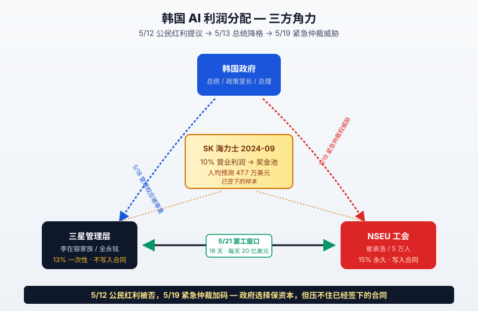

一、5/13 那句"胡说"，是去年 9 月 SK 海力士签的字打出来的回响
先把"奖金"这两个字说清楚。
在韩国半导体行业，"奖金"不是中国语境里"年底发个红包"那种东西。三星和 SK 海力士给员工的奖金，常年是基本工资的好几倍，有些年份是 1000% 甚至更高。这套体系叫 PS（Profit Sharing），表面上是利润分成，实际上是"老板看心情、董事会决议、可以是任何数字"。
直到 2024 年 9 月，SK 海力士换了一种玩法。
那一份新协议的条款是这样写的：每年，公司营业利润的 10%，必须进入员工奖金池。取消掉原本年薪 1000% 的上限。涨基本工资 6%。支付方式是 "8:1:1"——80% 当年现金发放，20% 分两年缓发，用来绑定离职。
这份协议在 2024 年 9 月签的时候，没什么人当回事。SK 海力士那时候的年度净利润，按市场预测，2025 年大概是 25 万亿韩元，10% 就是 2.5 万亿。摊到 33,625 个员工头上，人均约 7,400 万韩元——折合 5 万多美元，听着多但比起 SK 一贯的奖金水平也就那样。
然后 AI 来了。
2025 年 SK 海力士的最终营业利润是 38.4 万亿韩元（约合 280 亿美元），10% 利润分成实际打到账上的是每人约 8 万美元。Bloomberg 当时算了笔账，光这一笔奖金，SK 海力士总共付了 27 亿美元。
2026 年的数字会更离谱。Macquarie 银行 5 月初的预测——SK 海力士 2026 年营业利润可能突破 80 万亿韩元（约 580 亿美元），按 10% 协议，员工人均奖金预计是 47.7 万美元。Tom's Hardware 把这个数字打出来的时候，自己都加了个括号："yes, that's not a typo"。
47 万美元是个什么概念。
它比 Anthropic 一个 L5 工程师的全年总包要高。它比 OpenAI 一个 senior research scientist 的现金部分要高。它比硅谷绝大多数 AI 公司的 staff engineer 总包要高。SK 海力士清州工厂里，一个在 EUV 光刻机旁边盯参数的普通晶圆操作员——硕士学历可能都没有——今年年终能拿到的现金，比硅谷大部分写 AI 模型的人还多。
这不是奖金分高了。这是 AI 利润分配的合约化下沉。
把这件事拆细——SK 海力士那份合同里最关键的不是"10%"这个数字，是"必须"这两个字。在 2024 年之前，PS 奖金的本质是"分红式恩赐"——公司利润越好，老板可以多发，也可以借口"对冲未来风险"少发。所有的协议都是逐年谈，谈崩了就走人，留下的就接受董事会决定。员工对这份钱没有任何法律意义上的请求权。
10% 写进合同那一刻，性质变了。员工对这 10% 有了请求权。公司不能说"今年虽然赚了 80 万亿但我们决定只发 5%"——做不到，会被告。
换句话说，SK 海力士的工人，从"打工人"变成了一种新型的、不用出资的、永久存续的、对营业利润有 10% 优先求偿权的——优先股股东。
只是这种"股权"不能在二级市场流通，但分红权和股东几乎没区别。
这是过去三年 AI 大繁荣里第一次，利润的分配权从"董事会-投资人-高管"那个三角形，被一份白纸黑字的合同往下凿出了一个缺口，凿到了生产线上。凿出这个缺口的不是马克思主义经济学家，是 33,625 个韩国工人组成的工会，加上一个 2024 年 9 月不想被打瘫的 SK 海力士管理层。
5/13 凌晨三星工会主席崔承浩对着政府调解员说"nonsense"那一刻，他要的不是 13% 或者 15% 的数字游戏。他要的是这个缺口，在三星这里也凿一个。
凿不出来，下周一 5 万人罢工。
二、13% 和 15% 之间隔着的不是 2 个百分点，是合同本位制对家长制的兵变
三星管理层的报价，写在 5/13 那场谈判桌上的纸面是这样的——
奖金按 DS 半导体部门当年营业利润的 13% 计算，但仅 2026 年一次性适用；保留年薪 50% 的支付上限；基本工资涨 3%。
工会的要价是——
15% 写进雇佣合同，永久适用；取消年薪 50% 上限；基本工资涨 7%。主流媒体写这件事的时候，标题清一色是"双方在奖金比例上未达成一致"，分析师写报告的时候，模型里跑的也是"13 vs 15 的差值乘以营业利润等于多少现金"——好像这是一道初一数学题。
不是。
13% 一次性和 15% 写进合同之间，差的不是 2 个百分点的现金，差的是两套关于"利润归谁"的世界观。
13% 一次性的潜台词是这样：今年因为 AI 太疯狂，我们破例多发一点；明年要是市场冷了，或者我们要扩产，或者 Nvidia 砍单了——总之只要发生任何"非常情况"，奖金回归董事会决议。这套逻辑的法律源头是公司自治，是股东和董事会对公司利润的支配权。在韩国，再加一层东亚财阀的传统——李在镕家族通过 17.3% 的间接持股控制三星电子，对"什么钱该发给谁"有事实上的最终解释权。
15% 写进合同的潜台词是另一套：营业利润的 15% 不是我们的，是工人的。董事会不能动，股东不能动，李在镕也不能动。AI 涨了我们多分，AI 跌了我们少分——但分多分少必须按公式来，不能按谁的脸色来。
第一套叫家长制。第二套叫合同本位制。
两套体系在韩国财阀史上从来没真正交过手。三星电子从 1969 年成立到 2026 年，57 年里所有重大利润分配决策，最终签字权都在李家手里——李秉喆、李健熙、李在镕，三代人。工会成立得也晚，三星电子真正合法的全国级工会 NSEU 是 2019 年才挂牌——这之前三星玩了快 50 年的"无工会经营"，谁组工会谁被开除。直到 2018 年三星电子涉嫌阻挠工会成立的高管被起诉，李在镕被迫公开声明"放弃无工会经营方针"，NSEU 才得以成立。
成立 6 年之后，第一次大规模罢工，赶上了 AI。这个赶上不是巧合。
工会发现自己手里有了一张过去 50 年里没有过的牌——AI 暴利提供的、压倒性的、谁都没法否认的"分配缺口证据"。三星电子 2026 年第一季度财报显示，DS 半导体部门单季营业利润 53.7 万亿韩元，同比涨了 48 倍。Q1 全公司净利润同比涨 756%。同一份财报里，员工平均薪酬涨幅是 5.2%。
48 倍的利润涨幅对应 5.2% 的薪酬涨幅。这中间的差，全部留在了股东和管理层一侧。SK 海力士那份合同，就是工人对这个差额的第一次量化反应。SK 给出的答案是"10% 必须给我"，三星给出的答案是"15% 必须给我，还要写进合同"。
5/15 那天三星派 7 位副会长去平泽园区鞠躬这件事，半导体业务一把手全永铉亲自带队。三星历史上没干过这事——三星财阀的高管文化里，副会长这一级直接去现场低头是动用最高级别"恳谈姿态"，相当于把"我们错了"四个字写在了脸上。
崔承浩当场没回谈判桌。理由只有一句话——"没有理由在没把奖金公式写入雇佣合同的情况下回谈判桌"。
翻译这句话的实质：你今天来鞠躬，是我们应得的礼貌；但礼貌不算合同。明天你换个 CEO，他可以一句"恕不奉陪"把今天的鞠躬作废。我们要的是不能被作废的东西。
李在镕家族控制下的三星从来没碰过这种东西。一旦 15% 写进合同，意味着今后无论李在镕、未来的李在镕的儿子、未来未来的某个董事会决议，都不能改这个数字——除非工会同意。这是李家持有三星 57 年来，第一次被人在自家利润分配权上凿出一个永久缺口。
而工会的 93.1% 罢工通过率说明，5 万人在这件事上意志统一到了什么程度。
三、5/16 三星启动"应急管理模式"——这家公司 57 年没这么慌过
5/15 七位副会长去平泽鞠躬被拒。当晚回首尔，第二天三星就启动了"emergency management mode"。
这个词不是写新闻稿用的修辞，是三星内部 1969 年公司成立以来的一套真实运作流程。上一次启动是 1997 年亚洲金融危机，1998 年裁员 30%。再上一次是 2008 年金融危机，砍掉 27 亿美元资本支出。除此之外的 57 年里——包括 2016 年 Note 7 爆炸全球召回、2017 年李在镕被起诉羁押——都没启动过。
5/16 启动的具体动作有三个。
第一个是产线减载。三星半导体在平泽 P1/P2/P3 三个 fab 和华城 S3/S4/S5 五个 fab 的核心产线，开始有计划地把"在制品"（WIP, work-in-process）拉出来。Tom's Hardware 引用三星内部供应链文件，5/16 当周就撤走了大约 15,000 个晶圆载具（FOUP），按每个 FOUP 装 25 片晶圆算，相当于把 36 万片在制晶圆临时入库。这个量大约是平泽 P1 一个月产能的 60%。
第二个是延迟设备验收。三星原本 5 月有几台 ASML EUV 光刻机要做最终验收并投入 HBM4 产线，全部推迟到 6 月中下旬。延迟一周，三星就要给 ASML 多付一笔"待机费"，按 ASML 报价是每台每天 50 万美元。
第三个最致命——客户沟通。三星 5/16 启动应急管理的同一周（具体日期是 5/16），HBM4 量产开始第一批向 Nvidia 出货。这是三星 HBM 路线图上耗了两年三个月、追平 SK 海力士的关键一步。结果第一批刚出货，工厂就要进入预备减产状态。三星给 Nvidia 的沟通邮件大意是——"我们承诺不影响 5 月底前的合同交付，6 月之后视劳资进展评估"。
视劳资进展评估。
把这句话放到 AI 行业的语境里读一遍，Nvidia 的采购副总裁看到这九个字心情大概是这样的：黄仁勋下一个季度财报会上要 commit 的 Blackwell + Rubin 出货曲线，现在和首尔一个工会主席的心情挂钩。
三星不是没干过让 Nvidia 等的事。但过去等的理由都是技术——良率不达标、12-Hi 堆叠失败、TSV 工艺不稳。技术问题至少可以工程化解决，工程师 996 一个月或许就行。这次的理由是合同。合同问题不能 996，因为另一边坐着 5 万个不肯回岗的人。
代价开始算账。
4/24 那天工会做过一次"暖身"——只是一次平泽园区门口的集会，没有正式罢工，规模大约 5 千人，时长不到 4 小时。当天三星记忆体厂的出货量同比降了 18.4%，三星代工厂（Foundry）降了 58.1%。一次 4 小时的集会，让代工出货折了一大半。这个数字之所以这么夸张，是因为现代半导体 fab 高度自动化，所有 AGV（自动导向小车）、晶圆传送、洁净室换气系统的运转都需要少量但关键的工程师在岗——这些人一旦集体离岗 4 小时，整条产线只能进入"安全降载"模式，不能继续投片。
把 4 小时的 58.1% 换算成 18 天连续罢工——JPMorgan 半导体分析师 Jay Kwon 给出的估算是这样的：
- 罢工直接导致三星全年营业利润下降 2.1 万亿到 3.5 万亿韩元（14-23 亿美元）
- 半导体营收下降 1%-2%
- 综合考虑生产中断、机会成本、客户切换成本，总损失区间 26 万亿到 43 万亿韩元（174 亿到 289 亿美元）
- 平泽 + 华城两大综合厂如果完全停产，每日损失约 3 万亿韩元（20 亿美元）
然后是法院。
5/18 水原地方法院签下部分禁令。这个禁令的法律依据是韩国《劳动关系调整法》第 71 条——"必要公益事业"必须维持最低运行。法院的具体判决是：三星电子半导体业务被认定为"必要公益事业"中的"基础工业"，7,087 名工人——主要是 EUV 光刻、TSV 堆叠、HBM 测试三条关键产线的"必要服务人员"——必须留守岗位，参与罢工每人每日罚款 1 亿韩元（约 66,500 美元）。
7,087 个人保留岗位，听起来好像三星保住了主要产能。算笔账就明白——三星半导体在韩国全部员工大约 90,000 人，其中 NSEU 工会成员 45,000-50,000 人，罢工实际可参与人数 40,000+，法院禁令保住的 7,087 人是其中的 17%。剩下 83% 该走还是走。
韩国金属工人联盟当天就发声明，称这个判决"严重削弱了宪法保障的团结权"。三星法务部那边连夜准备的是另一份诉状——如果工会在 5/21 之后真有人违反禁令上街，三星会逐人追讨 1 亿韩元罚款。一个工人 1 亿韩元，5,000 个人就是 5 千亿韩元，3.3 亿美元的罚款威胁悬在头上。
工会主席崔承浩对这个判决的公开回应只有一句："法院的判决我们尊重，但奖金的事情我们继续。"实质就是——你罚你的，我罢我的。
5/19 韩国国务总理金民锡公开放话，政府准备启动《劳动关系调整法》第 76 条赋予的"紧急仲裁权"。一旦启动，国家可以在工会反对的情况下，强制冻结罢工 30 天，进入第三方仲裁程序。这是韩国历史上极少使用的工具——前一次启动是 2003 年的现代汽车，再前一次是 1969 年的浦项制铁。两次都让工会赢面减半。
5/20 现在还在最后调解中。如果今晚之前谈不拢，明天罢工开始，紧急仲裁权 48 小时之内大概率被启动。
整套时间线压在一起——5/15 高管鞠躬被拒、5/16 应急管理启动、5/17 工会拒 3.4 亿一次性奖金、5/18 法院禁令、5/19 紧急仲裁威胁、5/20 最后调解——三星 57 年来最完整的一次危机响应套件，全都被一份关于"15% 要不要写进合同"的争议给逼了出来。
这家公司从来没在劳资问题上这么慌过。慌的不是钱，是合同那两个字。
四、5/12 韩国总统办公室提议给全民发"AI 公民红利"，第二天被总统亲手降格
事情比"工人要分钱"更大。整个韩国政坛 5/12 下午都在转一篇 Facebook 长文。
发文的人叫 Kim Yong-beom，金溶范，韩国总统政策室长（Chief of Staff for Policy）——按韩国体制，这个职位相当于"政策版总参谋长"，直接向总统李在明负责，比经济部长还要靠近核心决策圈。
那篇 Facebook 的核心论点是这样的：
"AI 时代的超额利润在本质上是集中的。少数几家公司、少数几个国家、少数几种资本结构吞掉了几乎全部超额回报。这种集中度本身意味着，传统市场机制无法把 AI 红利公平地分配到全民。我们需要建立一种新机制，将 AI 基础设施带来的超额税收返还给公民——参考挪威主权财富基金模式，可以设想一种 AI 公民红利（AI citizen dividend）。"
挪威主权财富基金这个对照不是随便提的。挪威 1990 年代成立的 Government Pension Fund Global，把北海石油的超额收益注入主权基金，按每个挪威公民的"间接所有权"长期投资全球资产。挪威人均福利、教育、医疗的资金底座里，有相当一部分来自这只基金。Kim Yong-beom 这个类比的意思是——韩国应该把 AI 出口带来的超额税收，做成 AI 时代的"挪威基金"。
这条 Facebook 发出来 90 分钟之内，KOSPI 综合指数下跌 1.8%。三星电子单日跌幅 2.4%，SK 海力士跌 3.1%。Bloomberg 当天的标题是 "Korea Floats Citizen Dividend Using AI Profits; Samsung Falls"。
外资机构看完这条 Facebook 的第一反应是：韩国政府要对半导体行业的超额利润征额外税。如果真要这么干，三星和 SK 海力士的净利润率要被压一两个百分点，按市值乘 PE 倍数，这是几十亿美元市值的事。
第二天——5/13，李在明总统亲自下场降温。
总统办公室的公开声明措辞极克制：
"Kim Yong-beom 室长的 Facebook 帖子是个人意见，不代表政府正式立场。政府目前没有讨论任何针对特定产业征收超额利润税的方案。"
紧接着 5/18，李在明又在 X 上发了一条措辞同样克制的：
"南韩的自由民主市场经济体制要求经营权与劳动权受到同等尊重。"
5/19 国务总理金民锡的"紧急仲裁权"威胁，是这个政治姿态的延伸。从 5/12 的 "AI 公民红利" 到 5/19 的 "紧急仲裁权"，韩国政府在 7 天内完成了一次完整的政治表态翻转——从"应该把 AI 红利分给全民"到"应该强制冻结分红利的工会罢工"。
这中间发生了什么？
发生了两件事。一件叫资本市场，一件叫党内政治。
资本市场那边，5/12 的 KOSPI 大跌让外资单日净流出约 9 亿美元。韩国的产业结构对外资极敏感——三星电子和 SK 海力士两家公司占 KOSPI 总市值的 28%，这两家股价稳不住，整个韩国资产 narrative 就稳不住。Kim Yong-beom 的 Facebook 在 KakaoTalk 群里被各路外资基金经理截屏发了一整天，标签是 "Korea Discount 2.0"——意思是韩国市场又要回到打折交易的老路。
党内政治那边，李在明所属的共同民主党 5 月初刚通过总统初选，进入选战准备期。共同民主党的传统票仓里，有相当一部分是国有企业和制造业工会的工人——这部分人对"AI 公民红利"是欢迎的，因为他们享受不到三星和 SK 这种 AI 风口的利润。但共同民主党也是大企业税改的主要推动者，对"任何形式的超额利润税"持开放态度。Kim Yong-beom 那篇 Facebook 在共同民主党党内引发的争议是——把"超额利润税"具体到"AI 公民红利"这个名字上，等于把税改议题从"对大企业整体加税"窄化到"对三星和 SK 加税"，这会得罪两个最大的金主，但又不能给基层工会承诺"立刻发钱"。
进退两难之下，李在明选择了最稳的退路：把 Kim Yong-beom 的提议降格为个人意见，同时承认劳资双方权利，最后通过总理之口威胁动用紧急仲裁权——这套组合拳的实质是"不动钱、不动税、动罢工权"。
这个政治走向也告诉了崔承浩一件事：靠政府是靠不住的，要靠 10% 写进合同那一条。
而真正讽刺的细节在这里：Kim Yong-beom 那篇 Facebook 提到的"挪威主权基金"模式，挪威 1990 年代建立的时候，挪威的石油工人工会其实是这套机制的发起者和主要受益者之一。挪威石油工会通过持续 20 年的集体谈判，把石油超额利润的相当部分通过税收+主权基金的形式，固化成了挪威公民的长期福利。
韩国 SK 海力士那 33,625 个工人 2024 年签下的合同，本质上是挪威石油工会 1990 年代那套博弈的浓缩版——只是省掉了"主权基金"这一层中介，直接把利润绑死在了工人和股东之间的合同里。
Kim Yong-beom 想绕一大圈做 AI 时代的挪威。SK 海力士工会两年前就跳过了那一圈，直接做了。
李在明压住了 Kim Yong-beom 的提议，但他压不住 SK 海力士已经签下的那份合同，也压不住下周一可能开打的 5 万人。

五、JPMorgan 让你 buy on dips，但要 buy 的不是三星股票，是 SK 已经签下的那种新合同
5/19 早晨 JPMorgan 半导体团队发了一份给客户的内部 note，作者是分析师 Jay Kwon。Note 的核心结论一句话——
"For any share price corrections triggered by strike issues, we continue to recommend buying on dips."
"罢工引发的任何股价回调都是买入机会。"
JPMorgan 给三星电子的评级维持 Overweight，目标价没变。逻辑很简单——HBM 是 AI 训练的硬瓶颈，需求侧没有任何减弱信号，三星即便短期出货受影响，损失的份额会被 SK 海力士接走一部分，剩下的会让全行业 HBM ASP（平均售价）上涨。短期阵痛，长期偏正向。
这个判断在二级市场逻辑里没毛病。Counterpoint 的 HBM4 份额预测——SK 海力士 54%，三星 28%，Micron 18%。三星短期掉 5-10 个百分点，SK 接走，整个韩国半导体板块的总盘子不变，可能反而因为供给约束而 ASP 上涨。资本市场这套买入逻辑只关心一件事——HBM 总产能是不是稳定，钱总归会进入韩国半导体的某一家。
但这套买入逻辑有一个隐藏前提，JPMorgan 的 note 里没写。
那个前提是：罢工最终会以某种"合理代价"解决。三星这次抗住了 15% 写入合同的诉求，奖金大概会落在 13%-14% 一次性 + 部分写入合同的妥协方案。罢工持续 1-3 周后结束，6-9 月产能恢复。Nvidia 不会真把订单全转给 SK。一切回到 4 月之前的均衡。
但如果 5/21 开打后，工会在政府"紧急仲裁"威胁下挺过 30 天，并且最终把 10% 或更高的分成"写入合同"——那买入的就不是"短期阵痛过后的 K 线反弹"，而是一份新的、不可逆的、关于 AI 利润分配的行业 OS。
这套行业 OS 的样本，SK 海力士已经给了。
10% 营业利润写进合同。33,625 个工人，每人年终拿到的现金，超过硅谷绝大多数 AI 工程师的总包。这份合同 2024 年 9 月签的时候没人当回事，今天回头看是一个明确的拐点——AI 行业的利润分配权，第一次从"董事会自由裁量"这个法律框架，被合同凿出了一个让生产线工人参与分配的永久缺口。
三星这次如果跟，全球 HBM 90% 以上产能背后的合同性质会被永久改写。三星这次如果不跟，5 万人罢工最终结束后，下一次 2027 年劳资谈判会再来一次。再下一次还是不签，2028 年还会来。SK 海力士工会的 2024 协议已经成为既成事实，工会要价的下限已经被锚定在 10% 写入合同——三星管理层每次抗住，意味着每次都要付一个边际递增的代价（更多罢工天数、更多客户切换风险、更多政府压力）。
时间在工会一侧，不在管理层一侧。
至于 Anthropic、OpenAI、Google、Meta 这些 AI 应用层的公司，他们目前还可以装作什么都没发生。AI 利润分配的下沉只发生在最上游的硬件层——HBM、晶圆、EUV 光刻这些环节——离他们的工程师文化和股权激励机制有十万八千里。
但一旦"利润分成写入合同"这个先例从 SK 海力士扩散到三星，扩散到 TSMC，扩散到 ASML，再有人想到把这套逻辑套到 AI 数据中心运维、Nvidia 中国区销售、台积电美国厂的工人——那个时候 Sam Altman 给员工的 PPU 期权和 Dario Amodei 的 Anthropic equity grant，看起来就会像"老式股权激励"。
Daron Acemoglu 在《Power and Progress》里写过一句话——"技术进步不会自动惠及劳工。它惠及哪些劳工，惠及多少，永远是政治选择。"
韩国这一周做的，就是这个政治选择正在发生的样本。Acemoglu 说"政治选择"的时候，他可能想象的是议会立法、监管文件、税法修正。SK 海力士和三星给出的实物答案是另一种——一份雇佣合同，10% 的数字，写在合同条款里，工人有请求权。这比立法更具体，比税法更直接，比挪威主权基金省掉了 30 年的政治博弈。
未来五年看 AI 这门生意走多快、走多远，传统答案是看三个东西——Nvidia 的路线图、台积电的良率、硅谷模型公司的 Scaling 曲线。
这三个都还看。但加一个新的——韩国国家劳动委员会调解会议室里那张桌子上，下一份关于"利润分成写不写进合同"的协议。
5/20 晚那张桌子上正在谈的，是 AI 时代第一份股东和工人之间的正面合约。
签了，就回不去了。